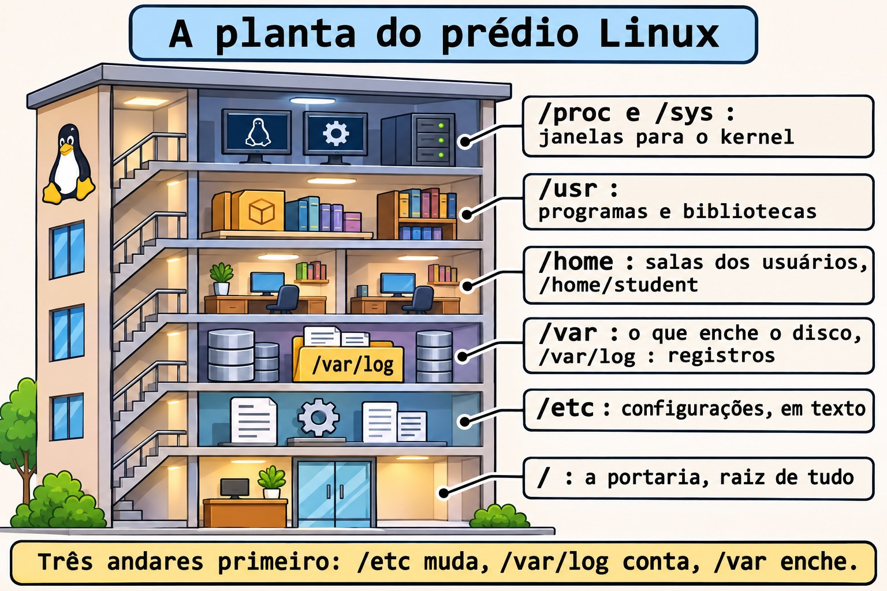
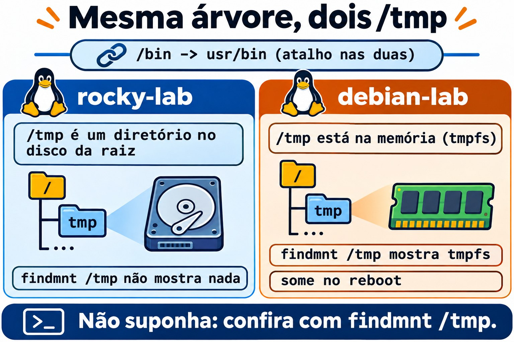
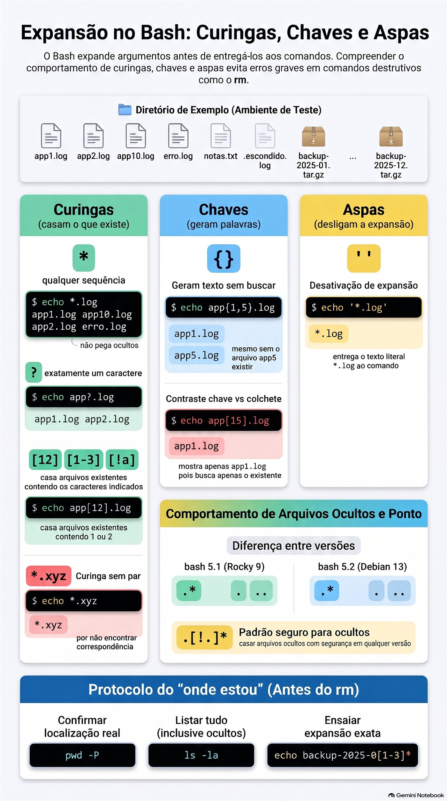
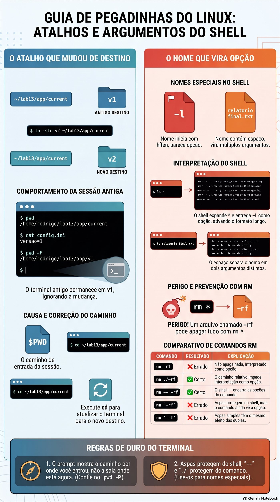

Aula 1.3 · Caminhos e navegação
Você aprende a andar pela árvore do Linux sem se perder, a saber onde cada coisa mora num servidor e a usar curingas sem medo, porque passa a conferir antes o que eles vão pegar.
| Ficha | Aula 1.3 |
|---|---|
| Módulo | M1 · Linha de comando, aula 3 de 10 |
| Quando | Semana 2 |
| Ao final você consegue | Chegar a qualquer diretório por caminho absoluto ou relativo; dizer onde ficam configurações, logs, programas e dados num servidor; ler a saída longa do ls e achar o arquivo mais novo; mostrar arquivos ocultos; prever e conferir um curinga antes de usá-lo; perceber quando o prompt mostra um caminho que já não é o real |
| Pré-requisitos | Aula 1.2 |
| Tempo | Cerca de 2h30 |
| Snapshots | m1a3-inicio e m1a3-fim nas duas VMs |
1 · Aquecimento
Três perguntas, de cabeça, antes de ler qualquer coisa. Escreva as respostas; o Gabarito confere no fim.
- Na debian-lab,
sudo cd /var/logrespondesudo: cd: command not found. Por quê? - Você vai mudar o
.bashrcde um servidor por SSH. Qual é a regra antes de fechar a sessão? - Antes de um lab que quebra coisas, o que você faz no nó Proxmox, e com que comando?
2 · Por que importa
Segunda de manhã, o monitor avisa: a raiz de um servidor de cliente está em 97%. Você entra por SSH e precisa responder em minutos o que cresceu, onde e desde quando. Quem conhece a árvore vai direto ao /var, lista com ls -ltr e acha o log que não para de crescer. Quem não conhece abre diretório por diretório, inclusive o /proc, onde um arquivo de 128 TB parece o culpado e não ocupa um byte do disco.
O segundo caso é mais silencioso. Um script de backup funciona sempre que alguém roda na mão e falha toda noite quando roda agendado. O script não mudou. O que muda é o diretório de onde ele parte. Caminho relativo é uma instrução do tipo “duas portas à esquerda”, e o agendador não começa na mesma porta que você.
O terceiro acaba em restauração de backup: um curinga usado no diretório errado, ou que casou mais nomes do que você imaginava. Esta aula termina com dois hábitos de dez segundos que evitam os três casos: saber onde você está de verdade e ver a lista do curinga antes de usá-la.
3 · Modelo mental
O sistema de arquivos é um prédio com uma única portaria: a
/.
Todo arquivo do servidor está em alguma sala desse prédio, e todo caminho é um jeito de chegar até ela:
- Caminho absoluto é o endereço completo, a partir da portaria:
/var/log/messages. Funciona de qualquer lugar do prédio, como um endereço com rua, número e cidade. - Caminho relativo é uma instrução a partir de onde você está: “duas portas à esquerda”.
log/messagessó funciona se você já estiver em/var. - Quatro atalhos de conversa:
.é “aqui”,..é “a sala de cima”,~é “a minha sala” ecd -é “volta para onde eu estava”. - A recepcionista da Aula 1.2 também lê as placas. Quando você diz “todos os
.log”, é ela quem vai de porta em porta e monta a lista de nomes. O comando recebe a lista pronta e nunca vê o*.
Dessa planta saem três consequências que você vai usar a carreira toda:
- Script e agendamento usam caminho absoluto. Ninguém garante em que sala um script acorda.
- Antes de qualquer comando que apaga ou muda algo em massa, você confere onde está. Caminho relativo certo na sala errada é o desastre clássico.
- O curinga é traduzido pelo shell antes de o comando rodar, então dá para ver a tradução antes:
echocom o mesmo curinga mostra a lista exata.
A planta do prédio, com o que mora em cada andar:
/ a portaria: a raiz de tudo
├── etc configurações, em texto
├── var o que muda com o uso
│ ├── log registros dos serviços
│ ├── lib dados de serviços: bancos, pacotes
│ └── tmp temporários que sobrevivem ao boot
├── home as salas dos usuários
│ └── student a sua: ~
├── root a sala do root
├── tmp temporários de curta duração
├── usr programas e bibliotecas da distribuição
│ ├── bin programas: /bin aponta para cá
│ └── share manuais e documentação
├── opt software de terceiros, instalado à parte
├── srv dados que o servidor publica: sites, arquivos
├── mnt media pontos de montagem de outros discos
├── dev dispositivos: discos, terminais
└── proc sys janelas para o kernel; não ocupam discoGuarde três andares antes dos outros: /etc é onde você muda o comportamento do sistema, /var/log é onde você descobre o que aconteceu e /var inteiro é o que enche o disco.


Ponte Windows. No Windows, cada disco é uma árvore separada (C:\, D:\). No Linux há uma árvore só: outro disco aparece como mais um diretório dentro dela, num ponto de montagem como /mnt ou /srv. O separador é /, e maiúsculas contam: Relatorio.txt e relatorio.txt são dois arquivos diferentes. E a diferença que mais engana: no cmd.exe, quem interpreta o * de dir *.log é o próprio dir. No Linux, o shell troca o curinga pelos nomes antes, e o ls nem fica sabendo que houve curinga.
4 · Conceito em camadas
Essencial
| Termo | O que é | Exemplo |
|---|---|---|
| Raiz | O diretório de onde sai toda a árvore | / |
| Diretório atual | A sala onde você está agora; os caminhos relativos partem dela | pwd |
| Caminho absoluto | Começa com / e funciona de qualquer lugar | /etc/ssh/sshd_config |
| Caminho relativo | Não começa com /; parte do diretório atual | ../log |
. e .. | O diretório atual e o de cima | cd .. |
~ | O seu home; ~ana é o home da usuária ana | cd ~ |
cd - | Volta ao diretório anterior e mostra qual é | cd - |
| Arquivo oculto | Qualquer nome que começa com ponto; o ls só mostra com -a | .bashrc |
| Curinga | Padrão que o shell troca pelos nomes que existem | *.log, app?.log |
| Expansão de chaves | Gera palavras, existam ou não os arquivos | app{1,2}.log |
| Link simbólico | Um atalho que aponta para outro caminho; o ls -l mostra a seta | /bin -> usr/bin |
| FHS | O padrão que diz o que vai em cada diretório | man 7 hier |
Os curingas cabem em quatro linhas:
*: qualquer sequência de caracteres, inclusive nenhuma. Não pega nomes que começam com ponto.?: exatamente um caractere.[12]e[1-3]: um caractere da lista ou da faixa.[!a]: qualquer caractere, menos esse.- Se nenhum nome casa, o curinga segue como texto, e o comando recebe o
*cru.
E o ls de todo dia: -l formato longo, -a com ocultos, -A com ocultos menos . e .., -h tamanhos legíveis, -t por data, -r ordem inversa, -d o próprio diretório e não o conteúdo, -R recursivo.
Ponte Windows
| No Windows | No Linux |
|---|---|
C:\Users\student | /home/student, ou ~ |
cd sem argumento, que mostra onde você está | pwd. No Linux, cd sozinho leva ao home. |
dir /a | ls -la |
dir /od | ls -ltr |
tree | tree, que precisa ser instalado |
| Atributo oculto | Nome que começa com ponto |
C:, D:, uma árvore por disco | Uma árvore só; os outros discos são montados em diretórios |
\ | / |
%USERPROFILE% | $HOME |
Aprofundamento
O shell expande, o comando recebe. Em ls *.log, quem procura os nomes é o bash. O ls recebe app1.log app2.log erro.log como se você tivesse digitado um por um. O echo recebe a mesma lista e só a imprime. Por isso echo é o ensaio de qualquer curinga.
Curinga sem par passa cru. Se nenhum nome casa, o bash entrega o texto do curinga como está: ls *.xyz responde ls: cannot access '*.xyz': No such file or directory. A mensagem é do ls, procurando um arquivo chamado literalmente *.xyz.
Aspas desligam a expansão. '*.log' chega ao comando como texto. É assim que você passa um padrão para um programa que faz a própria busca, como o find, que aparece mais adiante no curso.
Chaves não são curinga. {a,b} e {01..12} geram palavras antes de qualquer busca, existam ou não os arquivos. echo app{1,5}.log mostra app5.log mesmo que ele não exista. echo app[15].log mostra só o que existe.
O ponto esconde, não protege. Oculto é só uma convenção de nome para não poluir a listagem. Qualquer um com permissão de leitura vê os ocultos com ls -a. Proteção é permissão, que tem uma aula própria mais adiante.
O .* muda com a versão do bash. Até o bash 5.1, o do Rocky 9, .* também casa . e ... Do 5.2 em diante, o do Debian 13, não casa mais, por causa da opção globskipdots. Num bash antigo, um chown -R student .* sobe para o diretório de cima e muda o dono de tudo o que está lá. O padrão que funciona nos dois é .[!.]*.
O prompt mostra o caminho por onde você entrou. O bash guarda em $PWD o caminho que você digitou, com os atalhos. Se um atalho muda de destino depois, você continua na sala antiga e o prompt não percebe. O pwd -P pergunta ao sistema qual é o diretório real.
O /bin agora é atalho. No Rocky e no Debian atuais, /bin, /sbin e /lib são links simbólicos para /usr/bin, /usr/sbin e /usr/lib. Tutoriais antigos os tratam como diretórios separados; o resultado é o mesmo.
/proc e /sys não estão no disco. São janelas que o kernel abre na memória. ls -lh /proc/kcore mostra um tamanho absurdo, como 128T, e esse arquivo não ocupa um byte do disco.
5 · Rocky × Debian
A árvore segue o mesmo padrão nas duas VMs, mas os detalhes mudam. São eles que pegam você no servidor do cliente:
| rocky-lab | debian-lab | |
|---|---|---|
/bin, /sbin, /lib | Atalhos para /usr/bin, /usr/sbin e /usr/lib | Iguais: atalhos para /usr |
/tmp | Diretório no disco da raiz | Na memória (tmpfs) nas instalações novas do Debian 13: some no reboot. Confira no Passo 4. |
| Limpeza de temporários | /tmp depois de 10 dias, /var/tmp depois de 30 | Igual, nas instalações novas do Debian 13 |
| Logs do sistema | /var/log/messages, /var/log/secure e outros arquivos texto | Sem messages: desde o Debian 12, o grosso fica no journal, em /var/log/journal |
Ponto depois das permissões no ls -l | Aparece: o arquivo tem contexto SELinux | Não aparece |
ls colorido | Alias em /etc/profile.d/colorls.sh | Alias no ~/.bashrc |
bash e o .* | bash 5.1: .* casa também . e .. | bash 5.2: não casa |
tree | Fora da instalação mínima | Fora da instalação mínima |
| Manual do FHS | man 7 hier, do pacote man-pages instalado na 1.2 | man 7 hier, do pacote manpages |

6 · Lab guiado
Abra três terminais: um na rocky-lab (ssh rocky-lab), um na debian-lab (ssh debian-lab) e um no nó Proxmox, para os snapshots. Em cada passo, rode, compare com a saída esperada e só então leia o Decida. As saídas são trechos; números e datas vão ser outros na sua tela.
Cada Decida é um caso real de trabalho. Escolha a letra antes de olhar a tabela: errar aqui, com a explicação ao lado, é o jeito mais barato de errar.
Passo 1 · Snapshot antes de tudo. No nó Proxmox:
qm snapshot 201 m1a3-inicio --description "Aula 1.3, antes do lab"
qm snapshot 202 m1a3-inicio --description "Aula 1.3, antes do lab"
qm listsnapshot 201Saída esperada: a árvore termina em m1a2-fim, m1a3-inicio e, por último, current.
Passo 2 · Onde estou? Antes de rodar, aposte: para onde vai um cd sem nada depois? Nas duas VMs:
pwd
cd /var/log
pwd
cd
pwd
cd -
cd ..
pwd
cd ~rootAlgo como:
/home/student
/var/log
/home/student
/var/log
/var
-bash: cd: /root: Permission deniedO cd sozinho volta ao home. O cd - alterna entre os dois últimos diretórios e imprime para onde foi. O .. sobe um nível. A última linha é a recepcionista trabalhando: o shell traduziu ~root para /root, o cd tentou entrar e o sistema negou, porque o home do root é fechado para usuários comuns.
Decida 1 · O script que só funciona na mão. Cenário: o script de backup de um cliente funciona sempre que você entra em /opt/backup e roda ./backup.sh. Agendado no cron para as 2h, falha toda noite com tar: lista.txt: Cannot open: No such file or directory. O que você faz?
- A) Dá permissão total ao script e à lista com
chmod 777. - B) No script, troca
lista.txtpor/opt/backup/lista.txt, ou põecd /opt/backup || exit 1logo no começo. - C) Agenda o script como root.
- D) Acrescenta
/opt/backupao PATH.
Escolha a letra antes de olhar a tabela.
| Se você marcou | Resultado | Por quê |
|---|---|---|
| A | ❌ Errada | A mensagem diz No such file or directory, não Permission denied. E 777 abre o backup do cliente para qualquer usuário do servidor. |
| B | ✅ Certa | O cron começa o script no home do usuário, não em /opt/backup. Um caminho relativo é procurado a partir do diretório atual, então o tar procura lista.txt no lugar errado. Com caminho absoluto, ou com o cd no começo, o script acha a lista de qualquer lugar. O || exit 1 para o script se o cd falhar. |
| C | ❌ Errada | O root também começa no home dele, o /root. A lista.txt continua não estando lá. |
| D | ❌ Errada | O PATH serve para achar comandos, não os arquivos que um comando abre. O tar nunca olha o PATH para achar a lista.txt. |
Para fixar: caminho relativo é “duas portas à esquerda”. Só funciona se quem lê sabe de onde partiu, e um script agendado acorda sem saber.
Passo 3 · Absoluto ou relativo? Antes de rodar, aposte: estando em /var/log, quais destas linhas funcionam? Nas duas VMs:
cd /var/log
ls ../lib
ls lib
ls /etc/ssh
ls ../../etc/hostname
realpath ../../etcAlgo como:
alternatives dnf NetworkManager rpm selinux systemd ...
ls: cannot access 'lib': No such file or directory
moduli ssh_config ssh_config.d sshd_config sshd_config.d ...
../../etc/hostname
/etcNa debian-lab, a primeira linha mostra apt, dpkg e systemd, entre outros. O ../lib funciona porque sobe para /var e entra em lib. O lib sozinho procura um lib dentro de /var/log, e ele não existe. O /etc/ssh funciona de qualquer lugar. O realpath traduz um caminho relativo para o absoluto: use antes de colar um caminho num script.
Decida 2 · O tutorial colado. Cenário: um tutorial manda rodar cd etc/nginx. Você está no seu home, cola a linha e recebe No such file or directory. O nginx está instalado e funcionando. O que você faz?
- A) Reinstala o nginx, porque falta a configuração.
- B) Roda
cd /etc/nginx. O tutorial esqueceu a barra, ou supôs que você estava em/. - C) Roda
sudo cd etc/nginx. - D) Cria o diretório com
mkdir -p etc/nginxe entra nele.
Escolha a letra antes de olhar a tabela.
| Se você marcou | Resultado | Por quê |
|---|---|---|
| A | ❌ Errada | A configuração está lá. O cd procurou etc/nginx dentro do seu home, onde ele não existe. |
| B | ✅ Certa | Sem barra na frente, o caminho parte do diretório atual. Com a barra, parte da raiz e chega ao /etc/nginx de onde você estiver. |
| C | ❌ Errada | Duas vezes errado: o cd é builtin e o sudo não o acha, como você viu na Aula 1.2. E o caminho continuaria relativo. |
| D | ❌ Errada | Você cria um ~/etc/nginx vazio e passa a editar arquivos que o nginx nunca lê. É o tipo de erro que consome uma tarde. |
Para fixar: sem barra na frente, o caminho começa onde você está.
Passo 4 · A planta do prédio. Nas duas VMs:
ls /
ls -ld /bin /sbin /lib
findmnt /tmp
man 7 hierO ls -ld mostra algo como:
lrwxrwxrwx. 1 root root 7 Feb 10 2025 /bin -> usr/bin
lrwxrwxrwx. 1 root root 7 Feb 10 2025 /lib -> usr/lib
lrwxrwxrwx. 1 root root 8 Feb 10 2025 /sbin -> usr/sbinO l no começo e a seta dizem que são atalhos. O ponto depois das permissões só aparece na rocky-lab: o arquivo tem contexto SELinux, assunto do módulo de segurança.
O findmnt /tmp não mostra nada na rocky-lab: lá, o /tmp é um diretório comum no disco da raiz. Na debian-lab, algo como:
TARGET SOURCE FSTYPE OPTIONS
/tmp tmpfs tmpfs rw,nosuid,nodev,size=...O /tmp da debian-lab está na memória e se esvazia a cada reboot. Se não aparecer nada, a sua instalação foi configurada de outro jeito; o que vale é saber conferir.
No man 7 hier, digite /log e Enter; n vai para a próxima ocorrência. Leia o que o padrão diz sobre /var/log, /opt e /srv. Saia com q.
Decida 3 · O disco cheio. Cenário: o monitor avisa que a raiz de um servidor de cliente está em 98%. Por onde você começa a procurar?
- A) Por
/usr/bin, onde ficam os programas. - B) Por
/var, onde ficam logs, cache de pacotes, bancos de dados e filas de e-mail. - C) Por
/proc, porquels -lh /proc/kcoremostra um arquivo de 128T. - D) Por
/etc, onde ficam as configurações.
Escolha a letra antes de olhar a tabela.
| Se você marcou | Resultado | Por quê |
|---|---|---|
| A | ❌ Errada | Os programas só mudam quando um pacote é instalado ou atualizado. E apagar algo ali quebra o sistema. |
| B | ✅ Certa | O /var é o andar que cresce sozinho com o uso: log que ninguém gira, cache do dnf ou do apt, banco de dados, fila de e-mail parada. É lá que está a maioria dos discos cheios. O /home e o /tmp vêm logo depois. |
| C | ❌ Errada | O /proc não está no disco. O tamanho do kcore é o espaço de memória que o kernel enxerga, não bytes gravados. |
| D | ❌ Errada | São arquivos de texto pequenos. O /etc inteiro costuma ter poucos megabytes. |
Para fixar: o /usr é a estante, que só muda quando chega livro novo. O /var é a mesa de trabalho, que acumula papel todo dia.


Passo 5 · Ler o ls de verdade. Nas duas VMs:
ls -l /etc/hostname
ls -lh /var/log
ls -ltr /var/log
ls -ld /var/logA primeira linha, algo como:
-rw-r--r--. 1 root root 10 Oct 20 09:12 /etc/hostnameCampo por campo:
-: o tipo.-é arquivo,dé diretório,lé atalho.rw-r--r--: as permissões, que têm uma aula própria.1: quantos nomes apontam para esse arquivo.root root: o dono e o grupo.10: o tamanho em bytes. Com-h, os tamanhos viram4.0Kou1.2M.Oct 20 09:12: a última modificação.- Por último, o nome.
Agora compare as listagens de /var/log. Com -ltr, os mais novos ficam no fim, logo acima do prompt: é o uso mais comum no trabalho. Na rocky-lab, messages e secure costumam estar entre os últimos. Na debian-lab, o /var/log é mais curto e o journal é um diretório. O ls -ld mostra uma linha só: o próprio /var/log, não o conteúdo.
Decida 4 · Qual log mexeu por último? Cenário: um serviço parou há dez minutos. Em /opt/app/logs há 400 arquivos, com nomes de data misturados. Você quer ver os que foram escritos por último, sem rolar a tela. Qual comando?
- A)
ls -l - B)
ls -ltr - C)
ls -lS - D)
ls -R
Escolha a letra antes de olhar a tabela.
| Se você marcou | Resultado | Por quê |
|---|---|---|
| A | ❌ Errada | Ordem alfabética. Os 400 nomes passam pela tela e o mais recente pode estar em qualquer lugar. |
| B | ✅ Certa | -t ordena por data e -r inverte: o mais novo fica na última linha, logo acima do cursor, sem rolar nada. |
| C | ❌ Errada | Ordena por tamanho. Ajuda no disco cheio, não para saber o que mudou agora. |
| D | ❌ Errada | Entra em todos os subdiretórios e inunda a tela, sem ordem de data. |
Para fixar: t de tempo, r de reverso. O mais novo fica pertinho do cursor.
Passo 6 · Os ocultos. Nas duas VMs:
ls ~
ls -a ~
ls -A ~
ls -ld ~/.sshO ls ~ pode não mostrar nada. Os outros, algo como:
. .. .bash_history .bash_logout .bash_profile .bashrc .ssh
.bash_history .bash_logout .bash_profile .bashrc .ssh
drwx------. 2 student student 29 Oct 15 18:40 /home/student/.sshNa debian-lab, aparece .profile no lugar de .bash_profile. O home não estava vazio: os arquivos de configuração do usuário começam com ponto e o ls os esconde por padrão. O -A é o -a sem o . e o ... O .ssh é o diretório onde está o authorized_keys da Aula 0.2: sem ele, a sua chave não entra.
Decida 5 · A migração que trancou o usuário. Cenário: você migrou o home de um usuário para um servidor novo copiando tudo com *. No servidor novo, a chave SSH dele não funciona mais e o login pede senha. O que aconteceu?
- A) Chaves SSH deixam de valer quando são copiadas.
- B) O
*não pega nomes que começam com ponto, e o.ssh, com oauthorized_keys, ficou para trás. - C) O servidor novo não tem SSH instalado.
- D) Falta reiniciar o serviço SSH do servidor novo.
Escolha a letra antes de olhar a tabela.
| Se você marcou | Resultado | Por quê |
|---|---|---|
| A | ❌ Errada | Uma chave é só um arquivo de texto e vale onde estiver. O problema é ela não estar lá. |
| B | ✅ Certa | O * não casa nomes com ponto na frente. Foram os arquivos visíveis e ficaram o .ssh, o .bashrc e o resto da configuração. Um ls -A no destino mostra a falta em um segundo. |
| C | ❌ Errada | Se o login pede senha, o SSH está respondendo. |
| D | ❌ Errada | O serviço lê o authorized_keys a cada login. Reiniciar não cria o arquivo que não foi copiado. |
Para fixar: o * não enxerga quem se esconde atrás de um ponto. Depois de copiar, confira com ls -A.
Passo 7 · Curingas: o ensaio com echo. Monte um diretório de brinquedo nas duas VMs. O mkdir e o touch são da Aula 1.4; aqui eles só criam arquivos vazios para você testar:
mkdir -p ~/lab13/logs
cd ~/lab13/logs
touch app1.log app2.log app10.log erro.log notas.txt .escondido.log
touch backup-2025-{01..12}.tar.gz
lsO ls mostra 17 arquivos. O .escondido.log não aparece. Agora, antes de rodar cada linha abaixo, escreva a lista que você espera:
echo *.log
echo app?.log
echo app*.log
echo app[12].log
echo [!a]*
echo backup-2025-0[1-3]*
echo *.xyz
echo '*.log'
echo app{1,5}.log
echo app[15].log
echo .*Algo como (a ordem pode mudar conforme o idioma do sistema):
app1.log app10.log app2.log erro.log
app1.log app2.log
app1.log app10.log app2.log
app1.log app2.log
backup-2025-01.tar.gz ... backup-2025-12.tar.gz erro.log notas.txt
backup-2025-01.tar.gz backup-2025-02.tar.gz backup-2025-03.tar.gz
*.xyz
*.log
app1.log app5.log
app1.log
. .. .escondido.logO echo não sabe nada de curinga: só imprime o que recebe. O que aparece é exatamente a lista que o shell entregaria a um ls, um cp ou um rm. Repare em quatro coisas. O ? deixou o app10.log de fora, porque 10 são dois caracteres. O *.log não pegou o .escondido.log. O *.xyz e o '*.log' voltaram crus: um porque nada casou, o outro porque as aspas desligaram a expansão. E as chaves inventaram um app5.log que não existe, enquanto os colchetes só acharam o que existe. A última linha é da rocky-lab; na debian-lab, o .* mostra só .escondido.log, como você vê no Bônus.
Decida 6 · Antes de apagar. Cenário: o cliente pede para apagar os backups de janeiro a março de 2025, num diretório com dois anos de backups. Você montou a linha rm backup-2025-0[1-3]*. O que você faz antes de apertar Enter?
- A) Nada. O curinga está certo, é só apertar Enter.
- B) Roda
pwd, depois trocarmporechomantendo o mesmo curinga, confere a lista e só então volta aorm. - C) Reescreve como
rm backup-2025-0{1..3}*, porque chaves são mais seguras que colchetes. - D) Roda com
sudo, para não parar no meio por falta de permissão.
Escolha a letra antes de olhar a tabela.
| Se você marcou | Resultado | Por quê |
|---|---|---|
| A | ❌ Errada | O curinga pode estar certo e o diretório errado. Ou existe um backup-2025-01-parcial que ninguém lembrava. Você só sabe olhando. |
| B | ✅ Certa | O pwd confirma a sala, e o echo mostra a lista exata que o rm receberia. Custa dez segundos, e o rm não tem lixeira nem desfazer. |
| C | ❌ Errada | As chaves geram três curingas, e cada um é expandido do mesmo jeito. A lista é a mesma, e continua sem conferência. |
| D | ❌ Errada | Mais poder sem mais cuidado. Se a lista estiver errada, o sudo só garante que o estrago vai até o fim. |
Para fixar: o echo é o ensaio geral. Ensaio não custa nada; o rm não tem ensaio nem lixeira.


O protocolo do “onde estou”. Três comandos antes de qualquer coisa que apaga, move ou muda permissão em massa. O exemplo usa o curinga do Decida 6; troque pelo da vez:
pwd -P
ls -la
echo backup-2025-0[1-3]*O primeiro diz onde você está de verdade, mesmo com atalhos no caminho. O segundo mostra o que existe ali, ocultos incluídos. O terceiro mostra a lista exata que o comando vai receber. São dez segundos, em qualquer servidor.
7 · Quebre e conserte
Agora você vê o terminal mentir, de dois jeitos. Na primeira quebra, o prompt mostra um lugar onde você não está mais. Na segunda, um nome de arquivo vira opção de comando. Faça tudo na rocky-lab, dentro do ~/lab13: o snapshot m1a3-inicio está lá para isso.
Quebra A · o atalho que mudou de destino
Muitos deploys funcionam assim: cada versão da aplicação fica num diretório, e um atalho chamado current aponta para a versão em uso. Para trocar de versão, basta mudar o destino do atalho.
Quebre. Na rocky-lab, monte uma aplicação de mentira com duas versões. O > grava o texto num arquivo, assunto da Aula 1.6, e o ln -s cria o atalho, assunto de uma aula de links mais adiante:
mkdir -p ~/lab13/app/v1 ~/lab13/app/v2
echo "versao=1" > ~/lab13/app/v1/config.ini
echo "versao=2" > ~/lab13/app/v2/config.ini
ln -sfn v1 ~/lab13/app/current
cd ~/lab13/app/current
cat config.iniResponde versao=1, e o prompt mostra current. Deixe esta sessão onde está. Abra uma segunda sessão na rocky-lab (ssh rocky-lab) e faça o deploy da versão 2:
ln -sfn v2 ~/lab13/app/current
cat ~/lab13/app/current/config.iniResponde versao=2. O deploy deu certo.
Preveja. Volte à primeira sessão, que continua no current. Antes de rodar cada linha, diga o que ela vai mostrar:
pwd
cat config.ini
pwd -P
ls -l ~/lab13/appDescubra. Algo como:
/home/student/lab13/app/current
versao=1
/home/student/lab13/app/v1
total 0
lrwxrwxrwx. 1 student student 2 Oct 20 10:15 current -> v2
drwxr-xr-x. 2 student student 24 Oct 20 10:10 v1
drwxr-xr-x. 2 student student 24 Oct 20 10:10 v2O cd seguiu o atalho uma vez, na hora em que você entrou, e você ficou dentro do v1. O atalho mudou de destino; você não. O prompt e o pwd mostram o caminho por onde você chegou, guardado em $PWD, e por isso continuam dizendo current. O pwd -P pergunta ao sistema onde você está de verdade.
Decida 7 · A correção que não pegou. Cenário: logo depois de um deploy num cliente, você está num terminal em /srv/app/current. Edita o config.ini, reinicia o serviço e nada muda. O prompt garante que você está no current. O que você faz?
- A) Reinicia o serviço de novo, porque a primeira vez não pegou.
- B) Roda
pwd -P. Se mostrar a versão antiga, você editou a release velha: entra de novo comcd /srv/app/currente refaz a edição. - C) Reinstala a aplicação.
- D) Apaga o atalho
currente põe no lugar uma cópia do diretório da versão nova.
Escolha a letra antes de olhar a tabela.
| Se você marcou | Resultado | Por quê |
|---|---|---|
| A | ❌ Errada | O serviço lê o arquivo da versão em uso, e você editou outro. Reiniciar quantas vezes for não muda isso. |
| B | ✅ Certa | O terminal ficou no diretório antigo desde antes do deploy. O pwd -P mostra isso em um segundo, e entrar de novo pelo caminho faz o sistema seguir o atalho até a versão atual. |
| C | ❌ Errada | A aplicação está certa. O que estava errado era o lugar onde você editou. |
| D | ❌ Errada | Quebra o processo de deploy: na próxima versão, ninguém vai entender por que o current virou um diretório. E não resolve nada, porque o problema era o seu terminal. |
Para fixar: o prompt mostra o caminho por onde você entrou, não a sala onde está agora.
Conserte. Na primeira sessão:
cd ~/lab13/app/current
cat config.iniVerifique.
pwd -PResponde /home/student/lab13/app/v2, e o cat mostrou versao=2. Feche a segunda sessão com exit.
Quebra B · os nomes que enganam o curinga
Quebre. Na rocky-lab, crie dois nomes problemáticos no diretório do Passo 7. O -- da Aula 1.2 avisa ao touch que -l é um nome, não uma opção:
cd ~/lab13/logs
touch -- -l
touch "relatorio final.txt"
lsO ls mostra os dois, e o nome com espaço aparece entre aspas simples. Tudo parece normal.
Preveja. Antes de rodar cada linha, diga o que ela vai mostrar:
ls *
ls relatorio final.txt
ls *.txtDescubra. Algo como:
-rw-r--r--. 1 student student 0 Oct 20 10:02 app10.log
-rw-r--r--. 1 student student 0 Oct 20 10:02 app1.log
...
ls: cannot access 'relatorio': No such file or directory
ls: cannot access 'final.txt': No such file or directory
notas.txt 'relatorio final.txt'O primeiro ls saiu em formato longo sem você pedir. O shell trocou o * pela lista de nomes, e um deles era -l: o ls recebeu -l e entendeu como opção, como se você tivesse digitado. O segundo falhou porque o espaço separa argumentos, e o ls procurou dois arquivos, relatorio e final.txt. O terceiro funcionou: o curinga entrega cada nome inteiro, com espaço e tudo. O problema nunca é o nome; é como ele chega ao comando.
Com ls, o estrago é só visual. Com rm * num diretório que tem um arquivo chamado -rf, o rm recebe -rf como opção e apaga também os subdiretórios. Guarde isso para a Aula 1.4.
Decida 8 · O arquivo que vira opção. Cenário: num servidor de cliente, aparece em /srv/upload um arquivo chamado -rf, enviado por um formulário com defeito. Você precisa apagar só esse arquivo. Qual comando?
- A)
rm -rf - B)
rm ./-rf - C)
rm "-rf" - D)
rm '-rf'
Escolha a letra antes de olhar a tabela.
| Se você marcou | Resultado | Por quê |
|---|---|---|
| A | ❌ Errada | O rm recebe só opções e nenhum nome. Não apaga nada e não reclama: você sai achando que resolveu. |
| B | ✅ Certa | Com ./ na frente, o nome começa com ponto e o rm não o confunde com opção. rm -- -rf também funciona. |
| C | ❌ Errada | As aspas protegem do shell, não do comando. O shell tira as aspas e o rm recebe -rf do mesmo jeito: de novo, só opções. |
| D | ❌ Errada | Mesmo motivo do C. Aspas simples ou duplas, o rm recebe exatamente -rf. |
Para fixar: aspas protegem do shell; -- e ./ protegem do comando.
Conserte.
ls -- *
ls ./*
ls "relatorio final.txt"
rm ./-lO -- encerra as opções. O ./ faz todo nome começar com ponto e barra, e nenhum deles parece opção. As aspas mantêm o nome com espaço inteiro. O rm ./-l apaga só o arquivo -l; a Aula 1.4 trata do rm com calma.
Verifique.
ls -A
ls *O -l sumiu da lista, e o ls * voltou ao formato curto.


E o snapshot?
Se algo saiu do controle, volte ao início do lab. No nó Proxmox; para a debian-lab, troque 201 por 202:
qm rollback 201 m1a3-inicio
qm start 201O rollback desfaz tudo desde o Passo 1, inclusive o ~/lab13, e derruba as sessões SSH abertas. Entre de novo e refaça o Passo 7 antes de seguir.
Bônus na Debian
Rode as mesmas linhas nas duas VMs e compare:
bash --version | head -1
cd ~/lab13/logs
echo .*
echo .[!.]*
shopt globskipdotsNa rocky-lab, o echo .* mostra . .. .escondido.log, e o shopt responde invalid shell option name, porque o bash 5.1 não conhece a opção. Na debian-lab, o echo .* mostra só .escondido.log e o shopt responde globskipdots on. O .[!.]* dá o mesmo resultado nas duas: é o padrão portátil para pegar só os ocultos.
Para fechar, a árvore desenhada. Na debian-lab:
sudo apt install -y tree
tree -L 1 /
tree -a ~/lab13O -L 1 limita o desenho a um nível; o -a mostra os ocultos. Na rocky-lab, o pacote tem o mesmo nome: sudo dnf install -y tree.
A lição: o terminal mostra o que você digitou e o caminho por onde entrou, e isso nem sempre é o que existe. pwd -P e um echo com o curinga levam dois segundos e mostram a verdade antes do estrago. Vale para deploy, para limpeza de disco e para qualquer comando em massa num servidor de cliente.
8 · Armadilhas
| Sintoma | Causa | Saída |
|---|---|---|
cd: etc/ssh: No such file or directory, mas o diretório existe | Faltou a /: o caminho é relativo ao diretório atual. | cd /etc/ssh; na dúvida, pwd. |
| O script funciona na mão e falha agendado | Caminhos relativos; o cron começa em outro diretório. | Caminhos absolutos, ou cd /dir || exit 1 no começo do script. |
ls: cannot access '*.log': No such file or directory | Nenhum nome casou, e o curinga passou cru. | ls sem curinga: o diretório ou a extensão estão errados. |
ls * sai em formato longo sem você pedir | Um arquivo chamado -l virou opção. | ls -- * ou ls ./* |
ls relatorio final.txt dá dois erros | O espaço separa argumentos. | Aspas: ls "relatorio final.txt". O Tab completa o nome do jeito certo. |
Copiou tudo com * e faltou configuração | O * não pega nomes que começam com ponto. | Confira com ls -A; copie o diretório inteiro, como na Aula 1.4. |
| Editou o arquivo, nada mudou, e o prompt diz que você está no lugar certo | Você ficou no destino antigo de um atalho. | pwd -P, e entre de novo com cd no caminho. |
Relatorio.txt não é achado, mas relatorio.txt existe | O Linux diferencia maiúsculas de minúsculas. | Use o Tab, que completa o nome exato. |
cd ~root dá Permission denied | O home do root é fechado para usuários comuns. | sudo ls /root para olhar, ou sudo -i. |
Um arquivo deixado em /tmp sumiu | No Debian 13, o /tmp fica na memória e se esvazia no reboot. Nas duas, arquivos velhos são apagados depois de 10 dias. | Nada que precise ficar vai para /tmp. Use o seu home ou um diretório de dados. |
ls -lh /proc/kcore mostra 128T num disco de 32G | O /proc não está no disco: é o kernel mostrando a memória. | Ignore /proc e /sys quando procurar o que enche o disco. |
.* pegou também . e .. | bash 5.1 ou anterior, como o do Rocky 9. | .[!.]*, que funciona em qualquer versão. |
ls -l /var/log lista o conteúdo, e você queria o próprio diretório | Sem -d, o ls entra no diretório. | ls -ld /var/log |
tree: command not found | Não vem na instalação mínima. | sudo dnf install -y tree ou sudo apt install -y tree; ou ls -R. |
bash: cd: OLDPWD not set | Sessão nova: ainda não existe diretório anterior. | Normal. Depois do primeiro cd, o cd - funciona. |
9 · Quiz
Responda sem olhar a aula. As respostas comentadas estão no Gabarito, no fim.
- Qual é a diferença entre
/etc/ssheetc/ssh? De onde cada um funciona? - Você está em
/var/log. Escreva um caminho relativo para/etc/hostname. - O que fazem
cd,cd -,cd ..ecd ~ana? - Em que diretório você procura: a configuração do SSH; os logs; os programas da distribuição; os dados de um banco de dados; os homes dos usuários?
- Complete as lacunas: para ver o próprio diretório e não o conteúdo,
ls ___ /var/log. Para ver os mais novos no fim da tela,ls -l___. Para ver os ocultos sem.e..,ls ___. - Quem expande o
*: olsou o shell? Como você prova isso com um comando? - Num diretório com
app1.log,app2.logeapp10.log, o queecho app?.logmostra? Eecho app{1,5}.log? - O seu prompt diz
/srv/app/current, mas a edição que você fez não surte efeito. Que comando confirma onde você está de verdade, e por que o prompt pode estar errado? - Pergunta em inglês, como nos fóruns e na documentação: Which pattern matches file1.txt and file2.txt, but not file10.txt?
- A)
file*.txt - B)
file?.txt - C)
file[10].txt - D)
file{1,10}.txt
- A)
10 · Flashcards e cola
| Frente | Verso |
|---|---|
| Absoluto ou relativo? | Começa com /: absoluto, funciona de qualquer lugar. Sem /: relativo ao diretório atual. |
| Voltar ao diretório anterior | cd - |
| Ir ao home | cd sozinho, ou cd ~ |
| Onde estou de verdade, sem atalhos | pwd -P |
| Configurações, logs, dados de serviços | /etc, /var/log, /var/lib |
| Programas da distribuição e de terceiros | /usr/bin; /opt |
| O que não ocupa disco | /proc e /sys |
| Os mais novos no fim da tela | ls -ltr |
| O próprio diretório, não o conteúdo | ls -ld dir |
| Ver os ocultos | ls -a; sem . e .., ls -A |
*, ?, [12], [!a] | Qualquer sequência; um caractere; um da lista; qualquer um, menos esse |
| Curinga sem par | Passa cru para o comando: cannot access '*.xyz' |
| Chaves ou colchetes? | Chaves geram nomes, existam ou não. Colchetes só casam o que existe. |
| Ensaio de um curinga | echo com o mesmo curinga |
| Nome que começa com hífen | ./-nome ou -- antes dos nomes. Aspas não resolvem. |
Para saber de cor.
pwd
pwd -P
cd
cd -
cd ..
ls -la
ls -ltr
ls -ld /var/log
echo *.log
ls -- *Para consultar.
man 7 hier
realpath ../../etc
ls -lh /var/log
ls -A ~
ls -R ~/lab13
echo .[!.]*
echo backup-2025-{07..12}*
findmnt /tmp
tree -L 1 /
shopt globskipdotsNo man 7 hier, busque /log ou /opt. O shopt globskipdots só existe do bash 5.2 em diante.
11 · Checklist de saída
Marque só o que você consegue fazer sem olhar a aula:
- Dizer se um caminho é absoluto ou relativo, e de onde ele parte.
- Ir e voltar entre dois diretórios sem digitar o caminho de novo.
- Dizer onde ficam configurações, logs, programas, dados de serviços e homes.
- Achar o arquivo mais novo de um diretório com um comando.
- Mostrar os arquivos ocultos de um diretório.
- Prever a lista de um curinga e conferir com
echoantes de usá-lo. - Explicar por que o prompt pode mentir, e confirmar com
pwd -P.
Feche a aula. No nó Proxmox:
qm snapshot 201 m1a3-fim --description "Aula 1.3 concluída"
qm snapshot 202 m1a3-fim --description "Aula 1.3 concluída"
qm delsnapshot 201 m1a3-inicio
qm delsnapshot 202 m1a3-inicio
qm listsnapshot 201Saída esperada: m1a2-fim, depois m1a3-fim e, por último, current. O m1a3-inicio não aparece mais. O ~/lab13 fica nas VMs: a Aula 1.4 começa dele.
12 · Na vida real
Comando digitado uma vez, sem um problema de verdade atrás, some em um dia. Esta seção existe para isso não acontecer: uma missão no seu trabalho e um desafio amanhã, sem olhar a aula.
Missão no trabalho (até amanhã, só leitura). Escolha um servidor Linux real que você administra. Entre com o seu usuário e rode só comandos que leem:
pwd -P
ls -A ~
ls -ld /etc /var/log /tmp /opt /srv
ls -ltr /var/log | tail -5
ls -A /opt /srv
findmnt /tmpO tail -5 mostra só as cinco últimas linhas; ele é da Aula 1.5, e o | é da Aula 1.6. Anote três respostas no seu diário de admin:
- Qual foi o último log escrito em
/var/log, e de qual serviço ele é? - Existe algo em
/optou em/srv? Veio de pacote da distribuição, ou alguém instalou à mão? Se não souber, anote como pergunta para o colega que montou o servidor. - Há algum arquivo oculto no seu home que você não criou? De onde ele veio?
E um segundo desafio, para a semana: toda vez que for usar um curinga no trabalho com um comando que muda algo (apagar, mover, mudar dono), rode antes o mesmo curinga com echo. Anote no diário quantas vezes a lista veio diferente do que você esperava.
Amanhã, sem olhar. Reserve de 10 a 15 minutos na debian-lab. Sem abrir esta aula:
- Estando em
/var/log, vá para/etc/sshcom um caminho relativo. Depois volte para/var/logsem digitar o caminho. - Liste o conteúdo de
/etccom os arquivos modificados mais recentemente no fim da tela. - Em
~/lab13/logs, mostre comechosó os backups do segundo semestre, de julho a dezembro. - Descubra se
/sbiné um diretório ou um atalho, e para onde ele aponta.
Dica: se travar, as três perguntas são sempre as mesmas. Onde estou? (pwd). O que tem aqui? (ls -la). O que o shell vai entregar? (echo).
13 · Com o DeepTutor
| Comando | Quando usar |
|---|---|
!quiz 1.3 | Logo depois do lab: perguntas novas. |
!explica curinga e expansão de chaves | Quando um conceito ainda não fechou. |
!feynman caminho absoluto e relativo | Você explica com as suas palavras e ele aponta as falhas. |
!quebra 1.3 | Uma quebra nova de caminho, atalho ou curinga para você consertar. |
!cartoes 1.3 | Os flashcards em repetição espaçada. |
!erro ls: cannot access '*.log': No such file or directory | Cole um erro real e ele guia o diagnóstico. |
!revisao 1.3 | No D+1, D+3, D+7 e D+21. Junto: !revisao 1.2 no D+1 e !revisao 1.1 no D+3. |
Gabarito comentado
Aquecimento.
- O
cdé builtin: mora dentro do bash, e osudosó executa programas em disco. Para entrar num diretório fechado, usesudo -i; para só olhar,sudo lscom o caminho. - A sessão aberta fica aberta. Teste numa sessão nova e só feche a primeira quando a segunda funcionar.
- Um snapshot das duas VMs, com
qm snapshot 201 nomeeqm snapshot 202 nome. Se o lab sair do controle,qm rollbackvolta tudo.
Quiz.
/etc/sshé absoluto: parte da raiz e funciona de qualquer lugar.etc/sshé relativo: procura umetcdentro do diretório atual, e só chega ao lugar certo se você estiver em/.../../etc/hostname. O primeiro..sobe para/var, o segundo para/.cdvai ao seu home;cd -volta ao diretório anterior e mostra qual é;cd ..sobe um nível;cd ~anavai ao home da usuária ana./etc/ssh;/var/log;/usr/bine/usr/sbin;/var/lib;/home.-d,tre-A:ls -ld /var/log,ls -ltrels -A.- O shell.
echo *.logmostra a lista sem nenhumlsenvolvido, eecho '*.log'mostra o curinga cru, porque as aspas impedem a expansão. app1.log app2.log: o?casa um caractere só, e10são dois.app1.log app5.log: as chaves geram as duas palavras, mesmo que oapp5.lognão exista.pwd -P. O prompt e opwdsem opção mostram o$PWD, o caminho por onde você entrou. Se o atalhocurrentmudou de destino depois, você continua no diretório antigo. O-Ppergunta ao sistema e resolve os atalhos.- Escolha a letra antes de olhar a tabela.
| Se você marcou | Resultado | Por quê |
|---|---|---|
| A | ❌ Errada | O * casa qualquer quantidade de caracteres, inclusive o 10. Pega os três arquivos. |
| B | ✅ Certa | O ? casa exatamente um caractere. 1 e 2 passam; 10 são dois e fica de fora. |
| C | ❌ Errada | [10] casa um caractere, 1 ou 0. Pega file1.txt e um eventual file0.txt, mas não file2.txt. |
| D | ❌ Errada | Chaves não casam nada: geram file1.txt e file10.txt, o contrário do pedido. |
Amanhã, sem olhar.
cd /var/log, depoiscd ../../etc/ssh, depoiscd -.ls -ltr /etc.echo backup-2025-{07..12}*, ouecho backup-2025-0[7-9]* backup-2025-1[0-2]*.ls -ld /sbinresponde algo como/sbin -> usr/sbin: é um atalho para/usr/sbin.